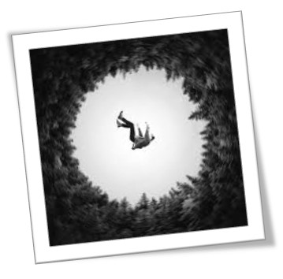

Aquí estoy
Chicas y chicos por igual...
APRECIA LO QUE TE DA LA VIDA, PORQUE NO TE LO DÁRA DOS VECES
Todos los seres humanos buscamos crecer, mejorar nuestras oportunidades en el mundo y por ende nuestra calidad de vida. Sin embargo, es muy difícil romper por nosotros mismos los círculos viciosos en los que nos encontramos. Nuestra misión como equipo de profesionales de distintas disciplinas es apoyar integralmente tu desarrollo personal, o el de tus seres queridos, para que logres salir adelante en un mundo donde cada vez resulta más difícil lograrlo.
“Se entiende por suicidio aquella conducta o conjunto de conductas que, dirigidas por el propio sujeto, conducen a la muerte (suicidio consumado) o a una situación de gravedad mortal (suicidio frustrado), bien de forma activa o pasiva”
Chicas y chicos por igual...
Cuenta conmigo, estoy para ayudarte...
Las personas con indicio suicida...
No estas solo puedes pedir ayuda...
Cómo ayudar a alguien con pensamientos suicidas...
La persona contempla el suicidio como solución real a sus problemas No existe aún una idea clara ni de cómo ni de cuando, pero entre las alternativas que puede tener para solucionar su situación problemática ya está presente el suicidio.
El suicidio es visto como alternativa y como la salida mas plausible La idea ha tomado cuerpo y se activan a nivel psíquico un conjunto de impulsos de muerte, que le llevan a establecer un plan suicida.

Se establece un plan de acción con diferentes niveles de elaboración. Si la puesta en práctica de este plan tiene “éxito” conduce a la muerte del sujeto.
Es un acto suicida que no conlleva a la muerte, porque determinadas circunstancias externas no previstas acontecen en el momento crítico. Es un intento que puede fallar por múltiples causas, desde no tener una firma decisión de suicidarse, hasta por el empleo de medios “no definitivos”.
El que lo dice no lo hace
8 de cada 10 lo han comentado
El que quiere matarse no lo dice
Todo el que se suicida expresó con palabras, amenazas, gestos o cambios de conducta lo que ocurriría
El suicidio es siempre impulsivo y ocurre sin advertencia
El suicidio puede parecer impulsivo, pero en muchos casos ha sido considerado durante algún tiempo
Si se confronta a un suicida no lo realiza
Confrontar a un suicida es irresponsable, ya que todos sus mecanismos de adaptación han fallado
Al hablar sobre el suicidio con una persona que esté en riesgo se le puede incitar a que lo realice
Por lo contrario, hablar de suicidio le permitirá hablar sobre su malestar y buscar ayuda
El que sobrevive a un intento de suicidio, está fuera de peligro
El riesgo es continuo, dado a la fragilidad en que se encuentra